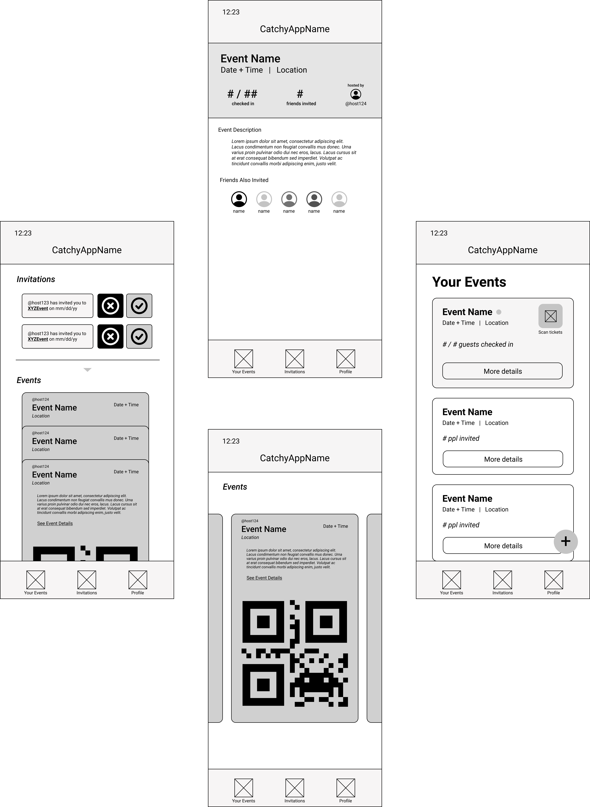
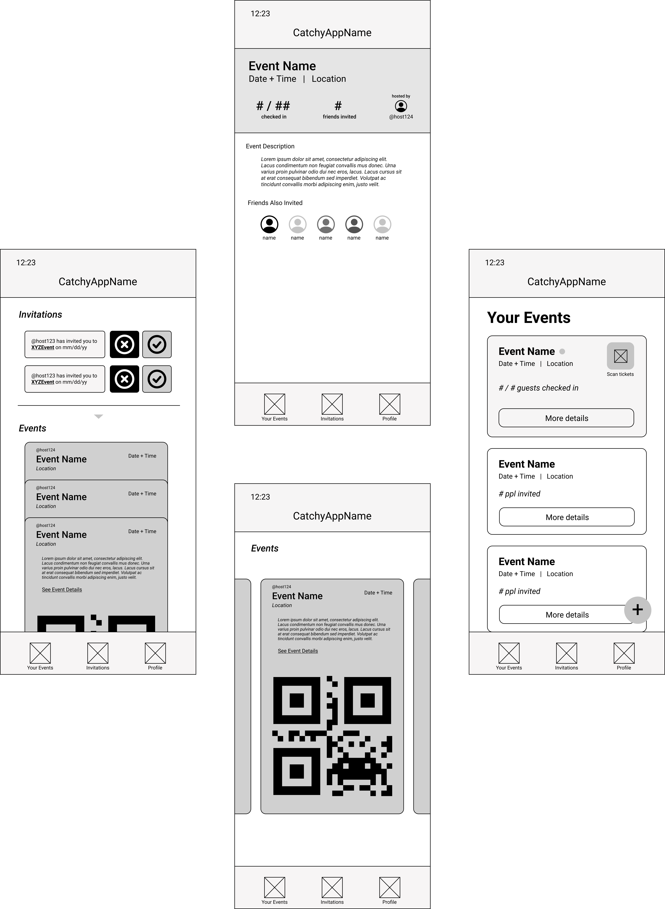
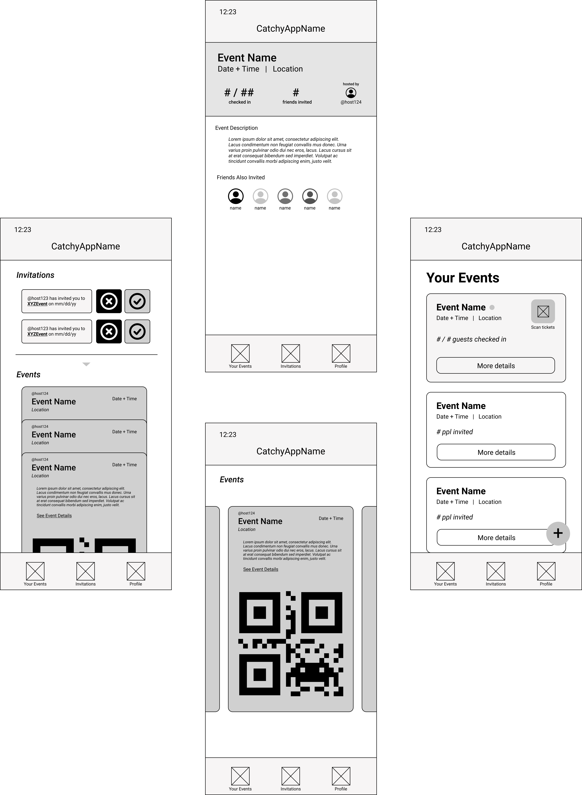

This past fall, I took the course Mobile Application Design and Development, which is sponsored by Capital One and consists
of students forming groups to develop an app of their own design over 15 weeks (6 sprints).
It includes a contest and cash prize with each team having to give a 15 minute pitch, a demo,
and a promo video of their app to Faculty and Sponsors.
My team built an app that streamlines the event
management process called Bouncr by providing a platform to create events, keep track of invitations,
and check-in guests at the door. Capital One awarded our app the first prize among all 19 teams.
Bouncr is slated to be available on the app store in Spring 2022.
Methods
Agile Methodology
API Design
Full-Stack Development
User Testing
Surveying
Semi-structured Interviews
Wireframing
Prototyping
Tools
Figma
XCode
SwiftUI
Firebase
iMovie
Trello
Github
Our app is an event access management tool that allows users to either create an event with a specified guest list or easily gain access to events where they are invited. Hosts can generate exclusivity with their events by sending tickets to their guestlist and those guests can easily get into the event by using the QR code that comes with their ticket. As guests arrive, the app provides statistics to guests about how many people are invited, which of their friends have already checked in to the event, and how many people are at the event of those invited.
Sprint 1: Ideation
For college students especially, hosting an event can be tumultuous and
unpredictable in terms of making sure only those specifically invited are let in.
Events can get out of control and are difficult to manage when more people show up than
anticipated, which is especially concerning in the aftermath of the pandemic. The person
responsible for making sure only those invited can enter the event often doesn’t know
everyone invited personally and likely feels awkward turning people away.
With this app, all it takes is QR codes to verify that the attendee is invited
and the host(s) can track and publish a real-time number of attendees who have
checked in. From an attendee perspective, this app also facilitates the process
of attending events by making it easy to receive invitations, respond to them,
and then attend the event. Additionally, if both parties permit, each attendee
can see which of their friends from the app have been invited to a given event
and see if they have arrived, helping them decide whether or not they want to go to the event.
Sprint 2: User Experience

User Testing Insights:
Most of our users use standard digital means like emails, google calendar invites and messaging apps to invite guests.
These modes of invitation do not allow for easy event checking, creating a pain point for our app to address.
A common way for hosts to verify if a guest was invited is to ask for their name and look for it on the invite list, a google sheet, with the search function.
Our QR code will provide a faster and more secure check in process.
One of the users felt more could be done to highlight the event that is currently occurring to help the host easily find the button to scan invites.
One of the users pointed out that the current design of the guest list and friends attending display will not work well for user lists of more than 10 users.
This feedback identified a design flaw and the user list design will be changed accordingly to possibly include sorts and filters to accommodate long user lists.
Sprint 3: API & Prototyping
For college students especially, hosting an event can be tumultuous and
unpredictable in terms of making sure only those specifically invited are let in.
Events can get out of control and are difficult to manage when more people show up than
anticipated, which is especially concerning in the aftermath of the pandemic. The person
responsible for making sure only those invited can enter the event often doesn’t know
everyone invited personally and likely feels awkward turning people away.
With this app, all it takes is QR codes to verify that the attendee is invited
and the host(s) can track and publish a real-time number of attendees who have
checked in. From an attendee perspective, this app also facilitates the process
of attending events by making it easy to receive invitations, respond to them,
and then attend the event. Additionally, if both parties permit, each attendee
can see which of their friends from the app have been invited to a given event
and see if they have arrived, helping them decide whether or not they want to go to the event.
Sprint 4: Version 1 of the App
For our first version, we focused on developing the attendee and host views and streamlining the checkin process by automatically creating invite cards that contain a QR code that can be scanned to update the attendance. The only features we held off implementing for V2 were the friend requests and friend related statistics associated with an event. Beyond that we also left many superficial changes for version 2.
Sprint 5: User Testing of V1
After conducting user tests with 6 potential end-users, we were able to not only understand how navigable our app is in its current state of progress, but also locate numerous UI bugs that we can fix in order to enhance the current user experience. While most users found it quite easy to navigate to the different pages and index their own events and invites, the microinteractions / gestures associated with performing smaller actions within each tab turned out to be difficult at times. For instance, many users thought that tapping a second time to switch back from spread out invite cards to stacked invite cards was not intuitive. Additionally, many users were concerned about the lack of confirmation associated with editing and deleting events as well as throughout the entire scanning process, suggesting that they need continuous feedback throughout their interactions with the app.
While designing our app in the earlier sprints, we tried to build off of existing mental models by incorporating UI elements and features similar to commonly used apps, like Apple Wallet, Google Calendar, Venmo, etc. Throughout our testing, it was clear that these design choices came across to users in both positive and negative lights. While many users were pleased with how we included wallet-like stacked cards and google-esque floating buttons, some users found switching between the invitation stack configurations less intuitive and the concept of “friends” and “friending” in the context of our app — something traditionally seen in social media platforms — as played out and yet another barrier in the way of usability.
Sprint 6: Version 2 of the App
We're really grateful to have won the 67443 Mobile App Competition and excited to publish Bouncr on the app store this spring! Below are the poster and promo video we had to make for the university-wide fair where the competition winners were announced.
 
